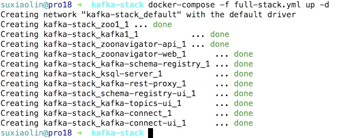
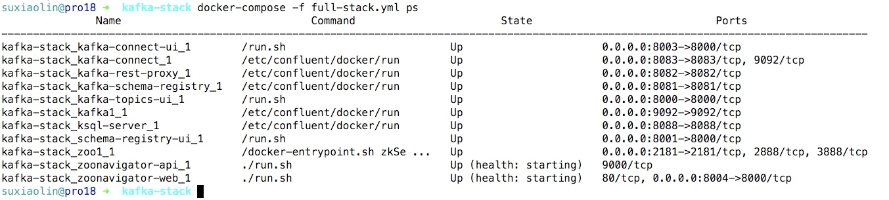
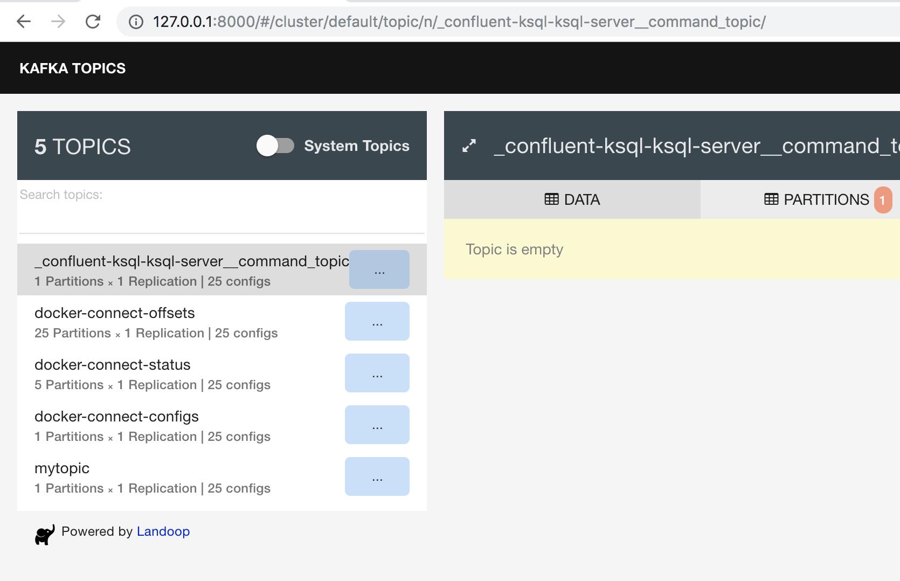
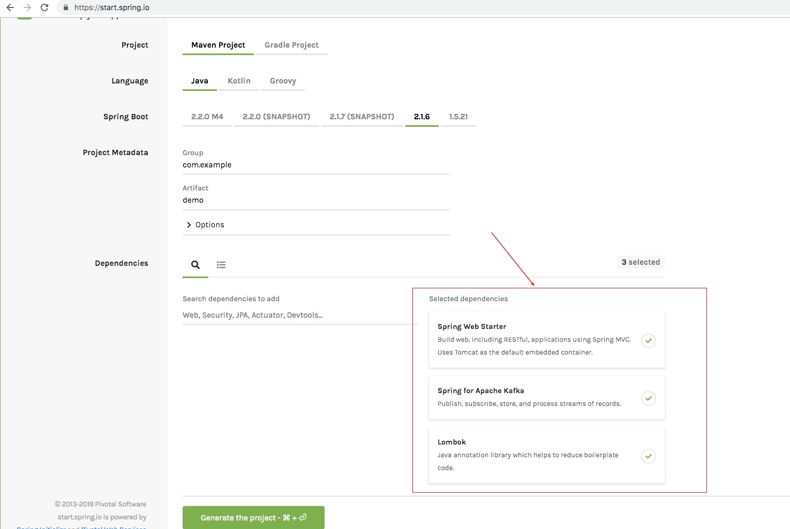
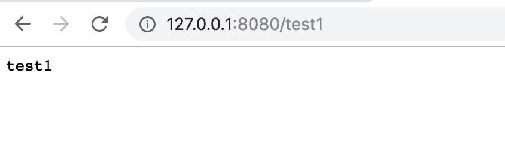
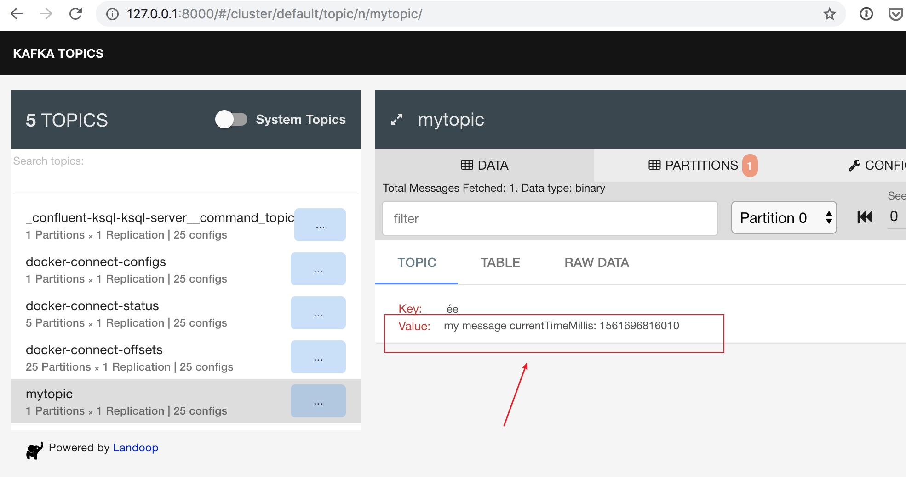
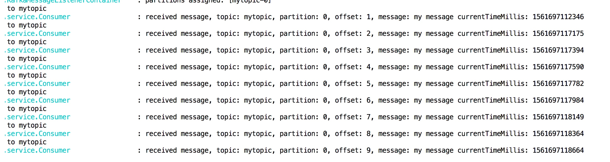

kafka消息堆积能力比较强，可以堆积上亿的消息，特别适合日志处理这种实时性要求不太高的场景，同时支持集群部署，相比redis堆积能力和可靠性更高
完整项目代码已上传github：https://github.com/neatlife/mykafka
可以通过下面的步骤快速上手这个kafka
获取一个可用的kafka实例
可以使用docker一键启动一个kafka集群，参考：https://github.com/simplesteph/kafka-stack-docker-compose
git clone https://github.com/simplesteph/kafka-stack-docker-compose.git
cd kafka-stack-docker-compose
docker-compose -f full-stack.yml up -d
操作效果如下

使用命令docker-compose -f full-stack.yml ps获取可以kafka监听的端口

记下kafka监听的地址9092，这个后面会用到
8000端口是这个kafka的topic的ui界面，这个界面可以查看当前的topic列表，效果如下

这里也看到topic里保存的数据
准备案例项目
可以在https://start.spring.io/创建测试项目

需要加上下面这三个包
- spring-boot-starter-web
- spring-kafka
- lombok
在appliation.properties中配置kafka的地址和使用的group-id，这个group-id名称可以自行定义，比如：myconsumergroup
spring.kafka.bootstrap-servers=127.0.0.1:9092
spring.kafka.consumer.group-id=myconsumergroup
创建topic
创建topic可以使用kafka-topics命令
docker-compose -f full-stack.yml exec kafka1 bash
kafka-topics --create --topic mylikes --replication-factor 1 --partitions 1 --zookeeper zoo1:2181
删除topic
kafka-topics --delete --topic mylikes --zookeeper zoo1:2181
用kafka客户端发送消息
使用一个spring boot的service封装kafka发送消息的代码，核心代码如下
package mykafka.service;
import org.springframework.kafka.core.KafkaTemplate;
import org.springframework.stereotype.Service;
@Service
public class Producer {
private final KafkaTemplate<String, String> kafkaTemplate;
private String topic = "自行定义的topic";
Producer(KafkaTemplate<String, String> kafkaTemplate) {
this.kafkaTemplate = kafkaTemplate;
}
public void send(String message) {
this.kafkaTemplate.send(topic, message);
System.out.println("Sent sample message [" + message + "] to " + topic);
}
}
然后编写一个接口调用这个发送kafka消息的service，核心代码如下：
@RestController
@RequestMapping("/")
@RequiredArgsConstructor(onConstructor = @__(@Autowired))
public class MyController {
private final Producer producer;
@RequestMapping("/test1")
public String test1() {
producer.send(String.format("my message currentTimeMillis: %d", System.currentTimeMillis()));
return "test1";
}
}
注意：上面代码里使用的kafka的topic可以自行定义，比如mytopic
然后在浏览器中访问这个接口 ip:8080/test1

可以在这个kafka的topic的ui看到发送到kafka的消息

可以看到这个消息已经发送到kafka了
消费消息
消费消息只需要在方法上加上KafkaListener，并指定topic和groupId即可
核心代码如下
@KafkaListener(topics = "mytopic", groupId = "myconsumergroup")
public void processMessage(String message,
@Header(KafkaHeaders.RECEIVED_PARTITION_ID) List<Integer> partitions,
@Header(KafkaHeaders.RECEIVED_TOPIC) List<String> topics,
@Header(KafkaHeaders.OFFSET) List<Long> offsets) {
log.info(
"received message, topic: {}, partition: {}, offset: {}, message: {}",
topics.get(0),
partitions.get(0),
offsets.get(0),
message
);
}
操作效果如下：

可以看到已经成功收到了kafka里的消息
其它客户端
php发送和消费客户端参考：https://github.com/arnaud-lb/php-rdkafka
go客户端参考：https://github.com/confluentinc/confluent-kafka-go/
一些注意的点
发送消息和消费消息需要确保topic一致
日志可以先发送到kafka做缓冲，然后通过kafka的客户端把消息取出来放到elk等日志存储系统中分析和可视化
因为kafka客户端发送消息和服务端把消息保存到磁盘都是异步操作，所以存在服务器宕机后消息可能丢失，如果可靠性要求更高，可以使用改进版的kafka：rocketmq